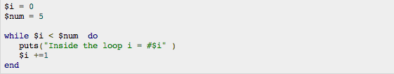
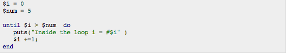
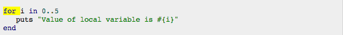

WHAT EXACTLY ARE LOOPS?
By definition a loop in Ruby is used to execute the same block of code a specified number of times. These are the primary types of loops: WHILE, UNTIL, EACH, FOR and several different ITERATORS. These loop functions allow you to do repetitive tasks very quickly and easily. Lets break down how each one works and discuss scenarios wheres its good to use.
WHILE LOOPS:
The first of these loops we'll discuss is the WHILE loop. How WHILE loops work is they execute all of the contained statements within them but only as long as the conditional statement remains true. In this example, the loop continually increases the value of the variable i by one. As long as the conditional statement i < num is true, the loop will continue executing the statement i += 1 which adds one to the variable.
UNTIL LOOPS:
UNTIL loops, being almost identical to while loops, with the exception that it will loop until the conditional statement is false. While loops will loop while the condition is true, until loops will loop until the condition is true. This example is the functional equivalent of the while loop example, except using an until loop, until i > num . The variable is incremented by one until its value equals ten.
FOR LOOPS:
A FOR Loop is used to repeat a specific block of code a known number of times. However, the use of FOR loops in Ruby is de-emphasized and is not used in typical practice. But their most common use is when looping over every number within a specificed range. An example of this would be if we want to check the grade of every student in the class, we loop from 1 to that number. But, when working in ruby and you don't know the number of times you need to loop over something, its makes more sense to use a "While" loop.
ITERATORS: EACH, TIMES, UPTO, DOWNTO and STEP
Traditionally, while and until loops are, in fact, used in Ruby programs, however, closure-based loops, or iterators, are more common. These iterator loops are very different in how they were built compared to the while and until but it isn't even required to know specifically what they are or how they work in order to use them. Iterators are all a type of loop that can be applied to various types of objects, such as loops or hashes. As there are a variety of loops, each one has slight variances in functionality and, therefore, are more applicable in different situations.
Each:
Each loops are made available for arrays and, as you may have assumed, it accesses each array element. Then with the iteration variable we then test and use the element. However, the index number still isn't available. Though, it's not always necessarily the case, each loops can be applied to an array with strings as its elements. But Each also has a modifier, Each_char, that can access a strings individual characters. Lets look at some examples of both:
Times:
TIMES iterator can be used with or without a iteration variable. When utilizing the iteration variable, the variable i starts at 0 and applies a block of code the number of TIMES specified. You may of noticed how TIMES loops use dot syntax (x.times do) as an alternative to the keyword syntax that the while and until loops utilize. This main relates to how TIMES loops are built and function fundamentally. However, they are used in the same way as while and until loops.
Upto:
Another iterator is UPTO. This loop works by beginning at the first number provided and continues on through the argument. In example below, we use "x" and "y" as the iteration variables and we nest an iterator loop using the UPTO loop. This function will loop 3, 4 and 5 and at each index, it loops over the next two highest numbers.
Downto:
The decrement loop is the DOWNTO iterator in Ruby. After each time passing through the block code, the DOWNTO function reduces the initial number by 1 after. If we use DOWNTO with a number argument that is not lower, the iterator body is not executed. It is the best practice to use the DOWNTO iterator only for simple loops. As an alternative solution for more complex and/or unusual interations, its best to use the step iteration. As a general practice in the industry, it is the most ideal to use the most simple syntax, in terms of form, for a particular operation. Therefore, If DOWNTO is effective, use it.
Step:
Looking for a more powerful iterator? Look no further than the STEP iterator. This iterator allows you to specify all, and possibly various, parts of a loop. The starting and ending index is indicated first, as well as the STEP — which is the change after each iteration. This is the ending index. In the examples below, our first loop ends at the index 10 and our second, we end at 6. The second argument given is the STEP. The iteration variable is changed by this amount—positive or negative—after each pass.
In summary, iterators make loops simpler. When utilizing these iterators, we help eliminate index variables when possible. This decreases the likelihood of code complexity, which in turn prevents bugs. With upto, downto and times we have straightforward loops. But I think step is more powerful iteration.
CONCLUSION:
Ultimately, there's no one right way to do any one thing, it all depends on the circumstances and what makes sense to your and/or your team. However, in the ruby community it seems that the general practice leans towards utilizing iterators and, specifically, leans away from the use of For loops. Generally, though, the best practice is to make a determination about how your code would best be read if someone who knew nothing about your project had to explain exactly what you did.